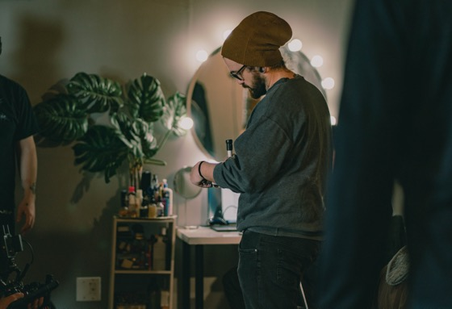
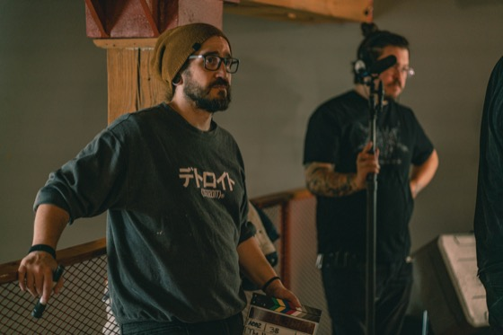
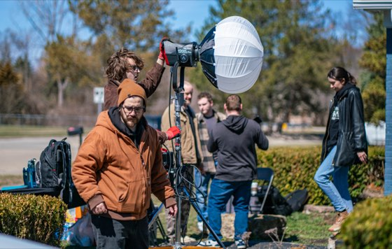
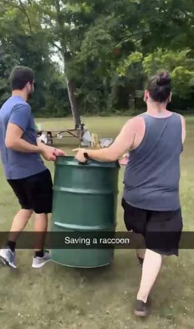
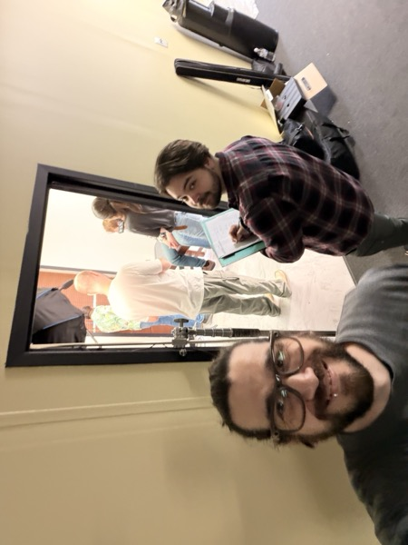
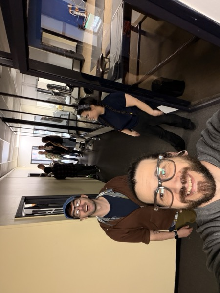
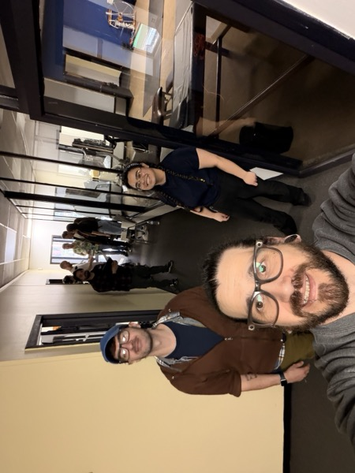

Hi : I'm Bobby.
LaB Media is one person with a camera, a full-time job, and a habit of finishing things on weekends.
That's true on paper. In practice hardly anything here got shot alone : a few people keep turning up to run sound, hold something steady, lend a lens, or talk me out of a bad idea, and the films are better for it. Some of them are on the people list, and the ones who brought their own gear are marked as such on the kit page rather than quietly folded in as mine.
With small crews and good friends, we make short films and the occasional brand piece. Along the way I kept a folder of links that actually helped : festivals worth entering, tools that don't waste your time, channels that explain the reasoning instead of just the settings. At some point the folder got big enough that keeping it private felt silly, so this site is that folder, made public.
I also build websites, including this one. No frameworks, no page builders, no monthly hosting bill : just plain HTML, CSS, and JavaScript on free hosting, put together with a lot of help from AI tools and a willingness to keep poking at it until it works. If you're a filmmaker who's been quoted an absurd number for a simple site, the honest answer is that you can probably get further on your own than you'd think, and I'm happy to point you at where to start.
I have a full-time job, so I rarely take on new work : this stays fun precisely because it isn't a business. But I genuinely like hearing about projects, and when helping out is something I can actually fit : advice, gear, a day on set : I usually do. If you want to talk shop, ask how something on here was shot or built, or tell me a link is broken, I'd enjoy that too.
- Status
- Open to conversation Not currently taking projects
- Show email address Best way to reach me
- Phone
- (313) 923-7444
- Based in
- Shelby Township, Michigan Metro Detroit
- Elsewhere
- YouTube ↗ The films Instagram ↗ BobtastiC FPV ↗ Personal channel : FPV drones, biking, & rollerblading LinkedIn ↗ RSS feed ↗ Site XML feed
On Set



The Hook14 photos : crewing on someone else’s set, March 2026
Photographs by Al Krakosky ↗


 Scattered3 photos : forty-eight hours, a tunnel, a trail and a raccoon
Scattered3 photos : forty-eight hours, a tunnel, a trail and a raccoon
Photographs by Bobby, except the raccoon : Al Krakosky ↗


 It’s a Boy4 photos : thirteen people in a backyard, April 2026
It’s a Boy4 photos : thirteen people in a backyard, April 2026
Taken on Bobby’s iPhone · the film’s own gallery has the rest ↗



Cracked3 photos : Mike Pickard’s Comedy Roll entry, April 2026
Taken on Bobby’s iPhone · Cracked is Mike Pickard’s own project, not a LaB Media film
Fair Questions
Can you shoot my project?
Honestly, probably not : I work full time and my weekends are mostly claimed by films of my own. But tell me about it anyway. I love hearing what people are making, and help doesn't always mean a crew slot : sometimes it's advice, a lens, or a spare pair of hands for an afternoon, and I'm glad to be that when I can. If you need someone reliably available, Michigan Crew Calls will serve you far better than I can.
Will you build me a website?
Probably not : but I'll happily point you at the starting line. Most small sites don't need anything more complicated than what's running this page. To be straight about the money: hosting can genuinely be free (this site sits on GitHub Pages), but a domain runs somewhere around $12–20 a year, and your own time is the real cost. Ask me where to begin and I'll give you a straight answer. I'm just not able to be anyone's ongoing tech support.
How did you…?
Reach out. Anything on the reel : a shot, a setup, why something looks the way it does : this is my favorite kind of question to get. Most of it was small crews, natural light, and more takes than anyone would guess.
Can I suggest a resource?
Yes, please. If something on the list is dead or something great is missing, send it over. I'd rather the list be right than large.
Does any of this cost money?
The site doesn't : nothing here charges you and nothing asks for your email. Plenty of the tools I list do cost money, though. This started as my own bookmarks folder, and I kept whatever was actually good regardless of price, so the list is a mix. Everything is tagged Free or Paid, with pricing shown where I have it, so you can see which is which before you click. If I ever add a link that earns me something, I'll label it right there rather than burying it in a policy page.